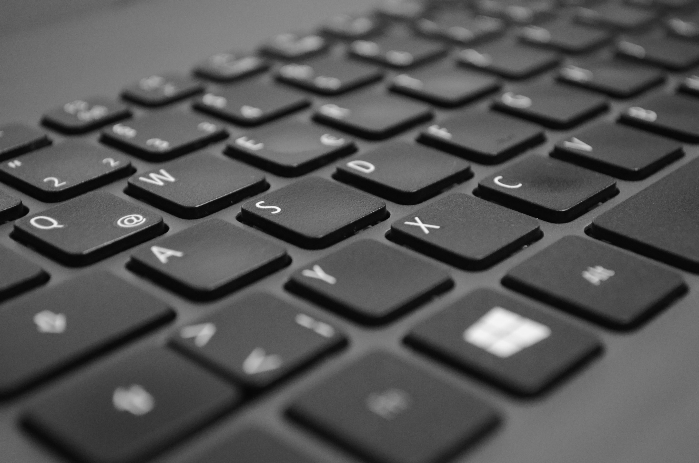
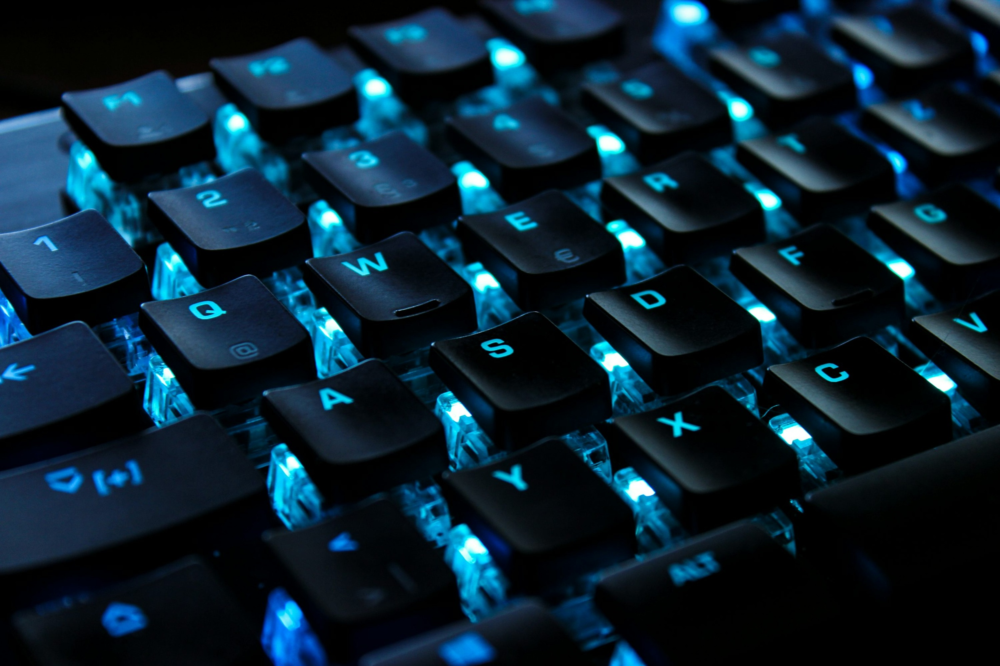
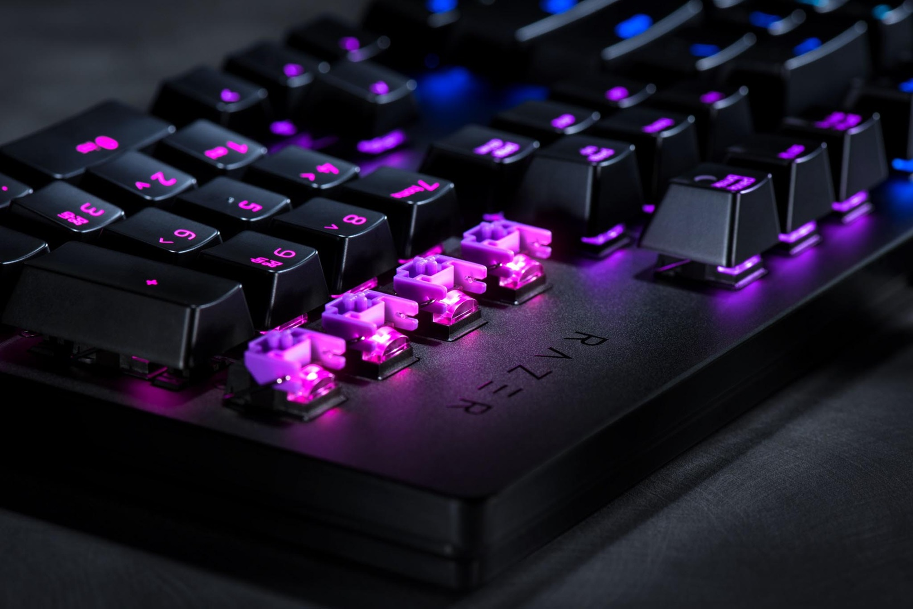

La tecnologia sotto i tasti cambia radicalmente l'esperienza di scrittura e di gioco.

Utilizzano un sistema a tre strati di membrana. Quando un tasto viene premuto, spinge un pad in gomma (o cupola) verso il basso, che chiude un circuito elettrico sullo strato inferiore.
Sotto ogni tasto c'è un interruttore (switch) fisico composti da un alloggiamento, una molla e uno stelo, che registra l'input quando viene premuto.


Simili alle tastiere meccaniche per struttura, ma utilizzano un raggio di luce a infrarossi per registrare l'input, anziché un contatto metallico. Quando il tasto scende, interrompe il raggio.